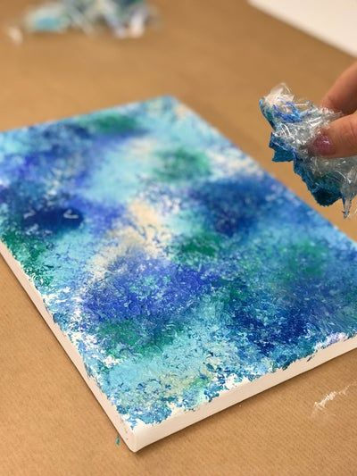
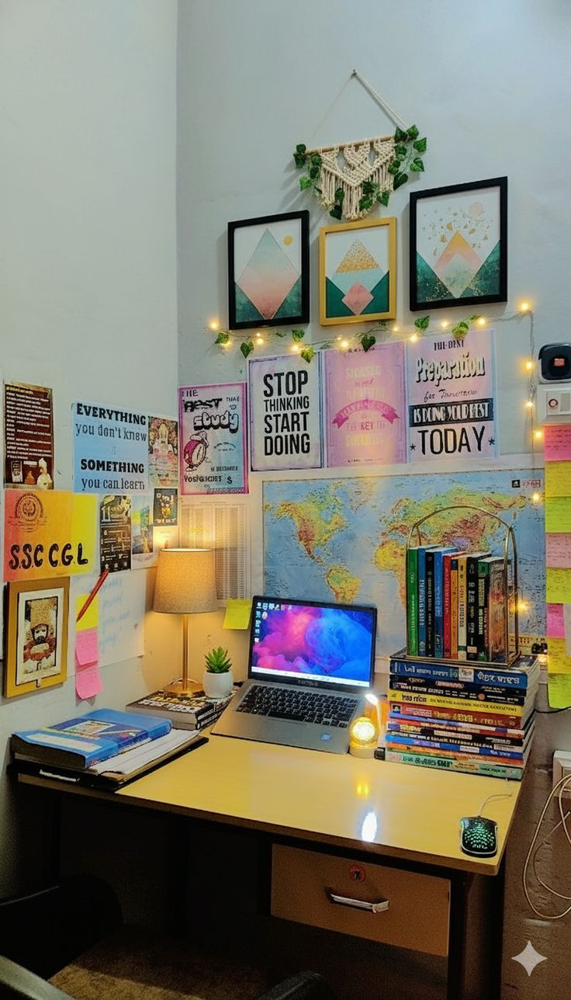
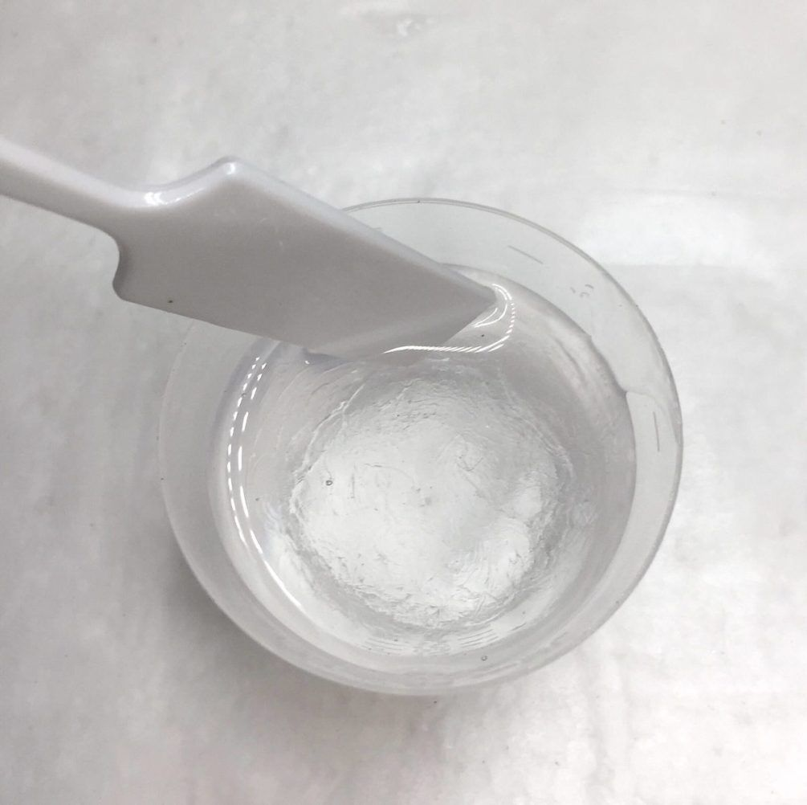
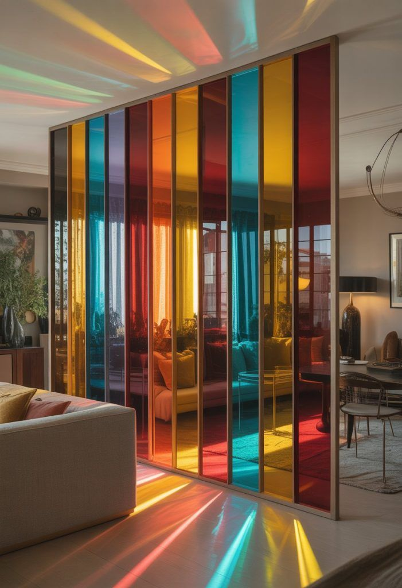
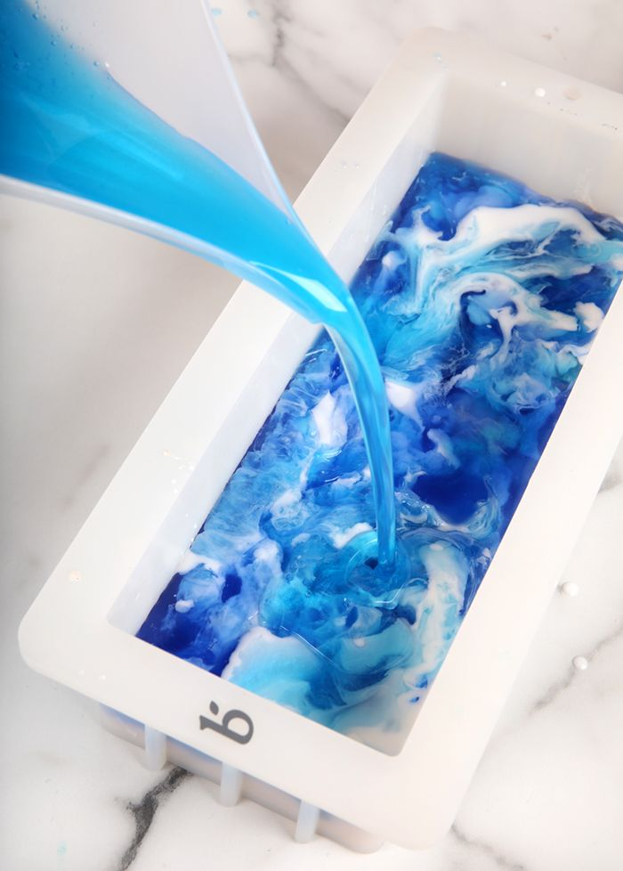
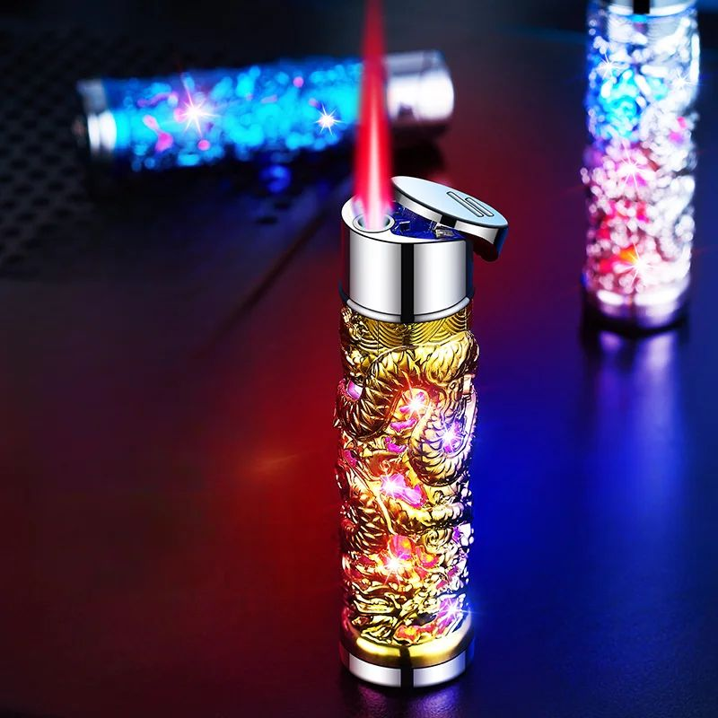
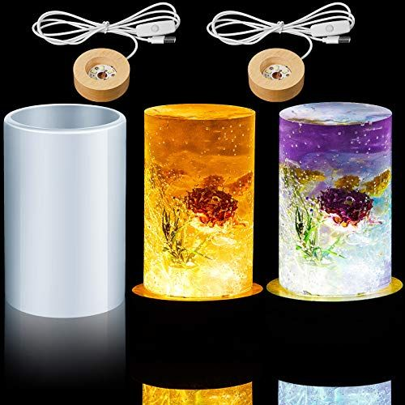
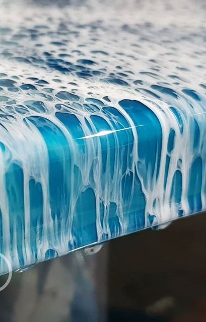

The Complete DIY Resin
Guide: Create at Home
Everything you need to make stunning resin art from your own home — step-by-step projects for coasters, jewellery, wall art, trays, and decorative keepsakes. No studio required. Just imagination, the right kit, and this guide.

Building Your First DIY Resin Kit
-
Art-grade 2-part epoxy resin — Not hardware-store epoxy. Art-grade resin stays clear, cures at room temperature, and produces the glass-like finish you see in professional pieces.
-
Digital kitchen scales (0.1g) — Measuring by weight is the single biggest upgrade a beginner can make. Inaccurate ratios cause sticky, permanently uncured resin.
-
Silicone mixing cups & stir sticks — Cured resin peels cleanly from silicone. This means cups and stir sticks are reusable indefinitely — essential for budget-conscious DIY.
-
Nitrile gloves (box of 100) — Resin is a skin sensitiser on repeated uncured contact. Gloves every single time, no exceptions, even for "just a quick drip."
-
Silicone moulds (coaster set) — Coasters are the perfect beginner project: flat, forgiving, and immediately useful. A 4-piece round set costs under £10 and lasts for hundreds of pours.
-
Butane kitchen torch — Popping surface bubbles with a torch pass is faster and more effective than any other method. A small catering torch from a kitchen shop works perfectly.
6 DIY Projects to Make at Home
From your very first coaster pour to a full set of botanical jewellery — six projects in order of increasing complexity, each with full step-by-step guidance.
Step-by-Step: Ocean Wave Coasters
The most popular beginner DIY project, broken into six achievable steps. Follow these exactly and you'll have four flawless coasters ready to gift or display.
Prepare Your Workspace
Cover your table with a silicone mat or plastic sheeting. Ensure the room is 21–24°C and well ventilated. Set out all tools before you begin: scales, cups, stir sticks, moulds, pigments, torch, and timer.

Measure & Mix Your Resin
Weigh Part A and Part B to your brand's specified ratio (commonly 1:1 or 2:1 by weight). Combine in a silicone cup and stir slowly for 4 full minutes, scraping the sides and base. Rest for 3 minutes.

Divide & Colour
Split your mixed resin into three cups: 50% white + pearl mica, 30% teal pigment, 20% clear. These three create the ocean layer effect. Stir each cup briefly to incorporate colour without re-introducing bubbles.

Pour in Layers
Pour the white base into each mould first, then add teal in a thin line across the middle, then drizzle the clear over the top. Use a cocktail stick or toothpick to drag through the layers to create wave motion.

Torch & Tent
Pass the torch 15cm above the surface in one or two sweeping passes to pop bubbles and activate cells in the white resin. Immediately cover with a cardboard box tent. Do not disturb for 24 hours.

Demould & Finish
After 24 hours, gently flex the silicone mould to release each coaster. Sand any sharp edges with 800 grit wet sandpaper. Apply self-adhesive felt pads to the base. Your coasters are ready to use or gift.


DIY Troubleshooting: When Things Go Wrong
Every DIY resin artist faces these challenges. Here's exactly how to diagnose and fix the six most common home-studio problems.
Sticky Surface
Cause: Incorrect ratio or under-mixing. Fix: Pour a fresh, correctly-mixed thin layer over the sticky surface to re-catalyse curing. For severe cases, scrape off and restart. Always mix by weight and stir for the full 4 minutes.
Too Many Bubbles
Cause: Cold resin, over-mixing speed, or skipped rest time. Fix: Warm bottles in a 40°C water bath before opening. Stir slowly. Rest mixed resin 3–5 minutes. Use a torch immediately after pouring in broad, sweeping arcs.
Colours Turned Muddy
Cause: Over-mixing pigment layers together, or complementary colours blending completely. Fix: Work faster before resin thickens. Keep colour sections separated and swipe — don't stir. White pigment between layers acts as a buffer.
Resin Overheated & Cracked
Cause: Too much resin poured in one go — the exothermic reaction generates dangerous heat in large masses. Fix: Never pour more than 1.5cm depth at once. For deep projects, use deep-pour resin formula and work in 1cm layers with 24h between each.
Cloudy or Hazy Finish
Cause: Moisture contamination, cold conditions, or high humidity above 60%. Fix: Always work in low-humidity rooms. Warm both bottles before opening. Avoid using water-based colourants. A dehumidifier in your workspace makes a dramatic difference in damp climates.
Dust in the Cured Piece
Cause: Uncovered curing environment. Fix: Always tent immediately after the torch pass. Wipe the inside of your cardboard box tent with a barely damp cloth to attract and trap dust. Work in the same room you cure, and avoid moving around nearby during the first hour.

What to Buy & Where
A curated budget-by-budget breakdown of what to buy at each stage of your DIY resin journey — so you spend money on what actually matters.
Starter (Under £40)
First Project- ✓ 500ml art resin kit (A+B)
- ✓ 4-piece round silicone coaster mould
- ✓ 3 mica powder colours (teal, white, gold)
- ✓ 2x silicone mixing cups
- ✓ Box of 50 nitrile gloves
- ✓ 5 wooden stir sticks
- ✓ Small butane kitchen torch
- ✓ Silicone mat / craft paper
Growing (£40–£100)
Level Up- ✓ 1L resin kit + extra hardener
- ✓ Jewellery & botanical mould set
- ✓ 10-colour mica powder set
- ✓ Alcohol ink set (6 colours)
- ✓ Digital kitchen scales (0.1g)
- ✓ Gold + silver leaf sheets
- ✓ 90% isopropyl alcohol
- ✓ UV protective topcoat spray
Advanced (£100+)
Pro Home Studio- ✓ Deep-pour resin (2L+)
- ✓ Pressure pot (2.5 gal) + compressor
- ✓ Orbital sander + 400–3000 grit pads
- ✓ UV nail lamp for UV resin work
- ✓ OV/P100 respirator half-face
- ✓ Meguiar's polishing compound
- ✓ Dehumidifier for workspace
- ✓ Professional silicone mould set